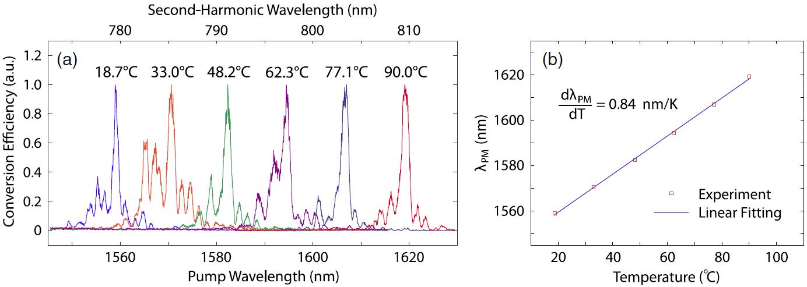

Integrated Nonlinear Photonics
Nonlinear optical processes have attracted long-lasting interest ever since the first observation of second-harmonic generation, which have found very broad application ranging from photonic signal processing, tunable coherent radiation, frequency metrology, optical microscopy, to quantum information processing. In general, nonlinear optical effects are fairly weak and have to rely on substantial optical power to support nonlinear wave interaction. However, high-quality nanophotonic devices are able to strongly confine the optical waves into a tiny volume/area with significant optical field inside, resulting in dramatically enhanced nonlinear optical effects to an extent inaccessible in conventional bulk media. Operating in the micro-/nano-scopic scale offers unprecedented freedom of versatile device design that enables flexible engineering of device characteristics (such as geometry, dispersion, quality factor, optical/mechanical resonance, etc) for various application purposes.

We currently explore new material platforms, new mechanisms, and innovative device designs for novel nonlinear photonic functionalities with high efficiency, long coherence, broad bandwidth, and/or large tunability, with focus on frequency comb generation, frequency conversion, and optical signal processing.


-
L. Zhang, et al, Opt. Express 20, 1685 (2012).
-
W. C. Jiang, et al, Opt. Lett. 38, 2604 (2013).
-
W. C. Jiang, et al, Appl. Phys. Lett. 105, 031112 (2014).
-
X. Lu, et al, Appl. Phys. Lett. 105, 151104 (2014).
-
H. Liang, et al, Opt. Express 24, 29444 (2016).
-
X. Sun, et al, Physical Review A 95, 023822 (2017).
-
X. Sun, et al, Opt. Express 25, 13504 (2017).
-
R. Luo, et al, Opt. Express 25, 24531 (2017).
-
H. Liang, et al, Optica 4, 1251 (2017).
-
H. Jiang, et al, Opt. Lett. 42, 3267 (2017).
-
H. Jiang, et al, Appl. Phys. Lett. 113, 021104 (2018).
-
R. Luo, et al, Optica 5, 1006 (2018).
-
R. Luo, et al, Phys. Rev. Appl. 11, 034026 (2019).
-
R. Luo, et al, Laser & Photon. Rev. 13, 1800288 (2019).
-
M. Li, et al, Optica 6, 860 (2019).
-
Y. He, et al, Optica 6, 1138 (2019).
-
C. Bao, et al, Optica 7, 309 (2020).
-
J. Zhao, et al, Opt. Express 28, 19669 (2020).
-
Y. He, et al, Laser & Photon. Rev. 14, 1900339 (2020).